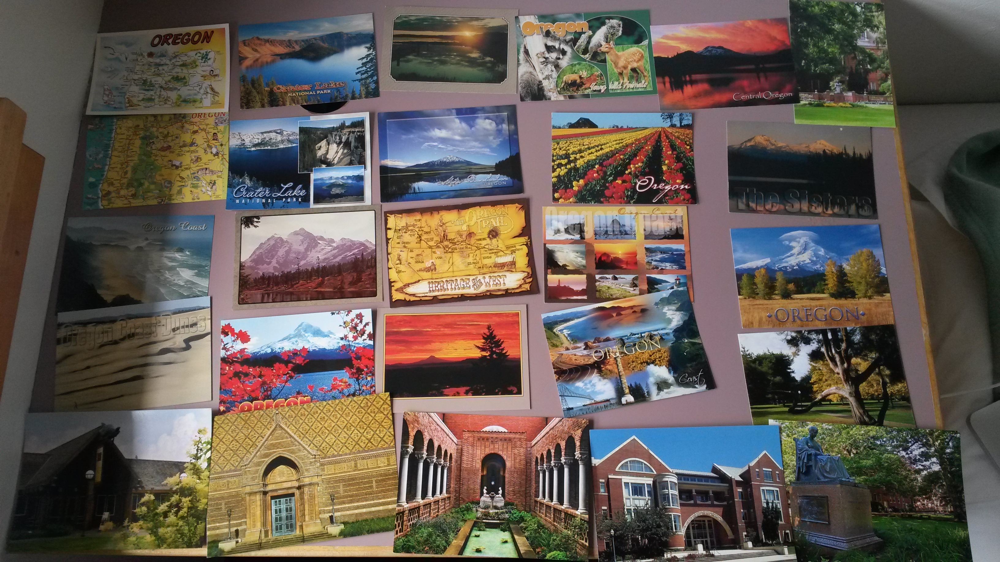

为了回答知乎上的这个问题：「大家现在出去度假旅游还会发明信片（手信）给朋友和家人吗？为什么？你怎么看明信片？」，我也是拼了
http://www.zhihu.com/question/19898152/answer/27792376
开心地答~
去年10月开始寄明信片，至今一共寄过3批共70人次，都是到一个新地方之后寄给各种同学和亲戚，越写越开心！还会一直写下去~
最初是10/22/2013，刚上初一的妹妹要求寄给她一张明信片，寄出之后想干脆多写几张给好基友们吧，便在微博和空间上发状态说「小伙伴们，留下地址就会收到明信片哦」，然后真的有好多小伙伴留下了地址，我就一封一封地写新学校的见闻，一个人在外的孤独感就这样被笔尖冲淡了不少！
我希望每一张明信片都是独一无二的，写的时候会想想有没有什么只有TA懂的梗、挑最适合的封面，所以每一次写还是挺花时间的，于是每每只有在到一个新地方之后才大放送。去年年底去旅游时、三周多前去“进修”时又寄了两次，到第三次时终于做到了每张明信片从封面开始就独一无二..！我还拍了张全家福作纪念，有些明信片真的好漂亮呢！！

对我来说，写明信片是和老伙伴们说说话的一个好机会，特别是很多初高中的同学，他们几乎只在空间出没，微信没加的话平时根本没有交集.. 寄明信片的机会是个多好的初始话题啊，联络联络感情什么的挺好的~
写明信片也可以认识新朋友，最近一次我就遇到了同样到处寄明信片的童鞋，瞬间就觉得亲近很多很聊得来啊！！于是也互相寄了明信片，虽然….虽然后来发现我把人名字给写错了……
大部分收信人，都是在我发布寄明信片的状态之后回复/点赞的小伙伴们，只有少数几次是主动寄的，大家你情我愿的，基本上都是正反馈.. 将心比心，我收到明信片的时候都是嘴角上扬着读完的，有人在远方念着你的感觉真的很温暖！！他们，应该也是的吧
一些吐槽 :)
我没有寄明信片给自己的习惯，倒是每次都有寄给爸妈，老妈是地理老师，所以常常挑封面是地图或者是标志性建筑的明信片寄回去，想着也许她上课给学生展示的时候用得到呢？！不过这应该是我脑补过度了..
以往爸妈对我的字的评价都是持悲观态度的，写明信片后竟然收到过评价「字体好萌」…. #我读书少你可不要骗我
就是酱紫